User Documentation
Contents
- Adding ibus-typing-booster to your desktop
- Setup
- Key and Mouse bindings
- Multilingual input
- Unicode symbols and emoji predictions
- Using NLTK to find related words
- Speech recognition
1.
Adding ibus-typing-booster to your desktop
This section assumes that you have already installed ibus-typing-booster either using binary packages or from source and now want to add an ibus-typing-booster input method to your desktop.
The procedure to add an ibus-typing-booster input method differs slightly depending on which type of desktop you use, the following sections show the procedure for popular desktop choices.
1_1
When using the Gnome3 desktop

-
First click on the panel menu in the top right corner of the desktop and then click on the “screwdriver and wrench” icon to open the Gnome3 control center.
-
Now the Gnome3 control center has opened. Click on the icon for the “Region & Language” settings.
-
At the bottom you see a list of input sources which have already been added to the desktop before. In this case there are already: “English (US, with euro on 5)” and “Japanese (Kana Kanji)”. This is just an example of course, the list of already added input methods could look different for you. The first entry, “English (US, with euro on 5)”, is not really an input engine, it is just a keyboard layout. One can see that an entry in the list of input sources is a keyboard layout if it does not have the icon showing two tooth-wheels at the right side.
It is recommended to use a keyboard layout with ibus-typing-booster which has a real “AltGr” key and does not just make the “AltGr” or “Alt” key on the right side of the space bar basically a duplicate of the left “Alt” key. For details, see The “AltGr” key.
The second entry, “Japanese (Kana Kanji)” is an input engine, it has the icon showing two tooth wheels at the right side.
Now click on the “+” button at the lower left to add another input source.
-
Then click on the three vertical dots “⋮” to open the search entry field.
-
Type the word “booster” into the search entry field. Only “Other” remains. ibus-typing-booster supports many languages, even at the same time. Therefore it is not listed under any specific language but under “Other”.
-
Click on “Other” and you should find an input method named “Other (Typing Booster)” there. There maybe lots of other input methods shown there, depending on what is installed on your system, but if you have ibus-typing-booster installed, “Other (Typing Booster)” should show up there.
If you just installed ibus-typing-booster while your current gnome session was still running, you need to restart your gnome session in order to make newly installed input methods appear in the gnome setup.
Select “Other (Typing Booster)” and click the “Add” button at the top right.
-
Now you you see the ibus-typing-booster engine listed in the “Region & Language” dialogue of Gnome3.
If you select it, a tooth wheel appears at the bottom right of the dialogue, clicking that opens the setup tool of that ibus-typing-booster engine.
-
Here you see the setup tool of that ibus-typing-booster engine where you can customize ibus-typing-booster according to your preferences.
-
Now open some programs where you could type something, for example “gedit” or “gnome-terminal”. And activate the ibus-typing-booster engine you want to use in the input source menu of the Gnome panel as shown in this screenshot.
When the input source menu of the Gnome panel is open and an ibus-typing-booster engine is selected, there is a menu entry “Setup” which is an quicker way to open the setup tool than going to the “Region & Language” settings dialogue.
Some options are also directly available in the input source menu of the gnome panel to have quicker access to these often used options than having to open the setup tool. There are also key and mouse bindings for these frequently used options which are shown in the input source menu of the gnome panel as well as a reminder.
-
Now type something, for example into gedit and you should see some suggestions for completions.
At the beginning, the suggestions only come from the hunspell dictionaries and are thus not very good yet. But ibus-typing-booster learns from your typing, it remembers which words you use often in which context. Therefore, the suggestions become much better over time.
To switch between ibus-typing-booster and other input methods or a simple keyboard layout, you can use the input sources menu in the Gnome panel or the keyboard shortcut, which is Super+Space by default (can be changed in the gnome-control-center).
1_2
When using other desktops than Gnome3

This chapter shows how to add the ibus-typing-booster input method on most desktops except Gnome3 and Unity. The screenshots in this chapter are using XFCE, but it is the same procedure on most other desktops and window managers as well, only Gnome3 and Unity are a bit special.
First start the ibus-setup program (For example by typing ibus-setup & into a terminal.
-
If
ibus-daemonis not yet running,ibus-setupmay ask whether you want to start it. In that case click on “Yes”. -
If
ibus-daemonwas not already running, you probably also want to make it run automatically every time when you log into your desktop. If you are using Fedora you can do that for most desktops and window managers usingimsettings-switchlike this:imsettings-switch ibus -
This will change some settings so that when you log in next time,
ibus-daemonwill be running and the following environment variables will be set:export QT_IM_MODULE=ibusexport XMODIFIERS=@im=ibusexport GTK_IM_MODULE=ibus -
If you don’t use Fedora and do not have the
imsettings-switch, there may be some other way to startibus-daemonon your system automatically and to set the above environment variables.Or you can put the above environment variables into your
~/.bashrcfile and startibus-daemonfrom some X11 startup file or make your windowmanager start it. I am using the “i3” windowmanager at the moment and have added the lineexec ibus-daemon -drxto my~/.config/i3/configfile. -
In the “General” tab of
ibus-setupyou see that the default shortcut key to switch between input methods is “Super+Space” and you can change this and some other options if you like.Personally I like the extra property panel. Therefore, I set the “Show property panel” option to “Always” here.
You probably also want the option “Show icon on system tray” switched on.
And I usually choose a somewhat bigger font to be able to see the details in the emoji better.
-
Now use the “Input Method” tab of
ibus-setupto add the ibus-typing-booster engine.You see a list of input sources which have already been added to the desktop before. In this case there are already: “English - English (international AltGr dead keys)” and “Japanese (Kana Kanji)”. This is just an example of course, the list of already added input methods could look different for you. The first entry, “English - English (international AltGr dead keys)”, is not really an input engine, it is just a keyboard layout.
It is recommended to use a keyboard layout with ibus-typing-booster which has a real “AltGr” key and does not just make the “AltGr” or “Alt” key on the right side of the space bar basically a duplicate of the left “Alt” key. For details, see The “AltGr” key. By the way, in the “Advanced” tab of
ibus-setupthere is an option “Use system keyboard layout”, if this option is selected, ibus-typing-booster will always use the system keyboard layout, otherwise it will use the keyboard layout from the list of input methods which was used last before switching to ibus-typing-booster.The second entry which is already there in the list of input methods, “Japanese (Kana Kanji)”, is a real input engine, not a keyboard layout.
Now click on the “Add” button at top right to add another input source.
-
Now either scroll down to the list of languages until you find “other” (usually at the end of the list) or click on the three vertical dots “⋮” to open the search entry field and then search for “other”.
-
ibus-typing-booster supports many languages, even at the same time. Therefore it is not listed under any specific language but under “Other”.
-
When searching for “other”, it looks as in this screenshot.
-
Select “Other” and scroll through the list of methods shown until you find “Typing Booster”. Select “Typing Booster”.
Click the “Add” button.
-
Now the ibus-typing-booster engine has been added to the list of input methods configured and it looks as in this screenshot.
If you select that typing-booster engine, you can click the “Preferences” button to open the setup tool of that typing-booster-engine.
-
Here you see the setup tool of that ibus-typing-booster engine where you can customize ibus-typing-booster according to your preferences.
-
Now open some programs where you could type something, for example “gedit” or “gnome-terminal”. And activate the ibus-typing-booster engine you want to use by clicking on the icon for the input methods in the system tray and selecting the ibus-typing-booster engine in the menu which opens.
When the input method menu of system tray icon is open and the ibus-typing-booster engine is selected, there is a menu entry “Setup” which is a quicker way to open the setup tool of that ibus-typing-booster engine than doing it with
ibus-setup.Some options are also directly available in the input method menu of the system tray icon to have quicker access to these often used options than having to open the setup tool of the ibus-typing-booster engine. There are also key and mouse bindings for these frequently used options which are shown in the input method menu of the system tray icon as well as a reminder.
On the top left of this screenshot you see the “property panel” which shows the current status of some frequently used options which can also be changed by clicking on the “property panel”. The “property panel” also offers a button to open the setup tool of the ibus-typing-booster engine. You can move that “property panel” to around on your desktop to a convenient place.
-
Now type something, for example into gedit and you should see some suggestions for completions.
At the beginning, the suggestions only come from the hunspell dictionaries and are thus not very good yet. But ibus-typing-booster learns from your typing, it remembers which words you use often in which context. Therefore, the suggestions become much better over time.
To switch between ibus-typing-booster and other input methods or a simple keyboard layout, you can use the input methods menu you get by clicking on the system tray icon or you can use the keyboard shortcut, which is Super+Space by default (can be changed using
ibus-setup).
1_3
When using the Unity desktop on Ubuntu
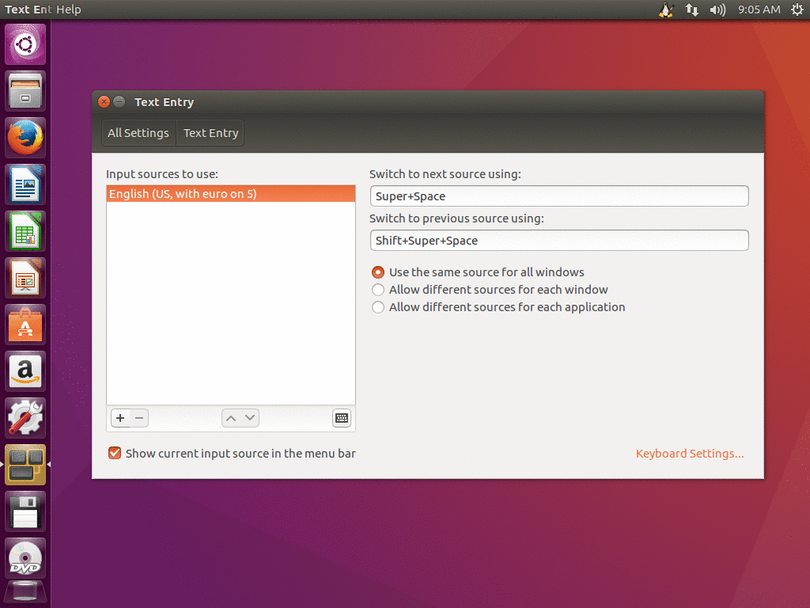
This section shows the setup of ibus-typing-booster on the “Unity” desktop of ubuntu-16.04.
These instructions are for ibus-typing-booster 1.5.x. For ibus-typing-booster >= 2.0.0, all engines have been merged into one, so you won’t find many different “Typing Booster” engines for many different languages anymore, there is only one single “Typing Booster” engine now which supports all languages. That doesn’t make a big difference in these instructions though, so I hope it is not too confusing that the screenshots in this sections are not up-to-date with ibus-typing-booster >= 2.0.0.
-
Open the system settings by clicking on the icon showing a tooth-wheel and a wrench a the left side of the screen. Then click on the “Language Support” icon there. In the dialog which opens, make sure that “Keyboard input method system” is set to “IBus”.
Close that “Language Support” dialogue again and click on the “Text Entry” icon in the system settings.
-
Some input sources may be already be listed at the left side of this dialogue. In this example we see “English (US, with euro on 5)” which is not really an input engine, it is just a keyboard layout.
It is recommended to use a keyboard layout with ibus-typing-booster which has a real “AltGr” key and does not just make the “AltGr” or “Alt” key on the right side of the space bar basically a duplicate of the left “Alt” key. For details, see The “AltGr” key.
Now click on the “+” button at the lower left to add another input source.
-
Type the word “booster” into the search entry and you see the currently available language variants of ibus-typing-booster. Select the variant of ibus-typing-booster you want to use and click on “Add”.
-
Now you see that an ibus-typing-booster engine has been added to the list of input sources to use.
If you select it, a n icon showing a wrench and a screwdriver appears at the bottom right of the list, to the left of the icon showing a keyboard. Click the “wrench and screwdriver” icon to open the setup tool of ibus-typing-booster.
-
Here you see the setup tool of that ibus-typing-booster engine where you can customize ibus-typing-booster according to your preferences.
-
Now open some programs where you could type something, for example “gedit” or “gnome-terminal”. And activate the ibus-typing-booster engine you want to use in the input source menu of the panel as shown in this screenshot.
When the input source menu of the panel is open and an ibus-typing-booster engine is selected, there is a menu entry “Setup” which is an quicker way to open the setup tool ibus-typing-booster setup tool than going via the system settings.
Some options of ibus-typing-booster are also directly available in the input source menu of the panel to have quicker access to these often used options than having to open the setup tool. For example the option to switch emoji mode on or off is available in the panel menu. There are also key and mouse bindings for these frequently used options which are shown in the input source menu of the panel as well as a reminder.
-
Now type something, for example into gedit and you should see some suggestions for completions.
At the beginning, the suggestions only come from the hunspell dictionaries and are thus not very good yet. But ibus-typing-booster learns from your typing, it remembers which words you use often in which context. Therefore, the suggestions become much better over time.
To switch between ibus-typing-booster and other input methods or a simple keyboard layout, you can use the input sources menu in the panel or the keyboard shortcut, which is Super+Space by default (can be changed in the “Text Entry” dialogue of the system settings).
-
If you want to enable the ibus property panel or change the font size for the list of candidates, you can do that by starting the ibus-setup program.
To show the property panel set “Show property panel” to “Always” in ibus-setup.
The property panel is seen in this screenshot at the top right, just below the Unity panel. You can move the property panel anywhere you like by dragging its left edge. The property panel shows the current value of some options of ibus-typing-booster and allows to change them quickly.
The screenshot also shows how a much bigger font was chosen for the candidate list with the “Use custom font” option in ibus-setup.
2
Setup
Ibus-typing-booster has a setup tool which allows to adapt the behaviour a lot to your preferences.
2_1
Basic setup for your language
 The most important setup in ibus-typing-booster is to choose the languages you want to use and how to input them.
The most important setup in ibus-typing-booster is to choose the languages you want to use and how to input them.
ibus-typing-booster works for many languages and it may be necessary to change the default dictionaries and input methods to different ones depending on which languages you want to use.
When one uses ibus-typing-booster for the very first time, it checks which locale is set in the environment and initialises its setup with dictionaries and input methods which are useful for this locale.
But it is probably a good idea to open the setup tool and look whether these defaults are OK for you. You can open the setup tool by selecting ibus-typing-booster in the input method menu of the panel and then clicking on the “Setup” menu item in the panel.
The screenshot of the setup tool shows the default dictionaries and input methods for the locale “hi_IN.UTF-8” (Hindi in India).
For this locale, one will get the dictionaries “hi_IN” (Hindi) and en_GB (British English) and the input methods “hi-inscript2” and “NoIME” by default. “hi-inscript2” is an input method for Hindi. “NoIME” means no input method at all, that means the characters are used as they come from the current keyboard layout without any transliteration. Adding the British English dictionary and the “NoIME” input method makes it also possible to type English.
As English is used quite a lot in India, it is probably a good default for the “hi_IN.UTF-8” locale to setup input for both Hindi and British English.
But the defaults guessed from the current locale are not always what a user wants. A user might use a “en_US.UTF-8” (American English) locale because he prefers the user interface in English but nevertheless might want to type Hindi. And even when running in the “hi_IN.UTF-8” locale, the defaults might not be optimal for some users. “hi-inscript2” is not the only input method to type Hindi, there are other choices. And maybe one wants to even more different languages and input methods completely unrelated to the current locale.
The screenshot shows a list of dictionaries at the top and a list of input methods at the bottom. Under both lists there are buttons to add or remove items, to move items up or down to increase or lower the priority. And there are buttons to set the lists to the default for the current locale. The input method list also has a “help” button to show some help how to use a certain input method.
Both lists can hold a maximum of 10 items, i.e. you can have up to 10 dictionaries and 10 input methods. Don’t overdo it though, don’t add more than you really need, adding more dictionaries and input methods than one really needs slows down the system and reduces the accuracy of the word predictions.
The list of input methods cannot be made completely empty, as soon as you remove the last input method, the “NoIME” input method is automatically added back because no input at all makes no sense.
The list of dictionaries can be made empty though. That doesn’t seem particularly useful to me, but apparently there are some users who use ibus-typing-booster mostly as a convenient input method for emoji or special symbols and in that case one doesn’t need a dictionary.
2_2
More advanced options
This chapter explains more advanced options how to adapt the behaviour and the look and feel of ibus-typing-booster to your preferences.
2_2_1
Enable suggestions by a key

By default, ibus-typing-booster pops up a list of candidates as soon as you type something and you can choose a candidate to complete the word you have started typing to save some key strokes, fix a spelling error, or select an emoji or special character.
But some users prefer not to have these candidate lists displayed all the time. Maybe they are fast touch typists and usually type without completion support and the frequent pop up of the candidate lists is too visually disturbing. Calculating the candidate lists also takes some time, especially if emoji predictions are enabled. These calculations may actually interfere with the typing for very fast typists.
But from time to time even exceptionally fast typists may still want to see candidates to complete a very long word or check the spelling or or input an emoji.
In that case it can be useful to check the option “Enable suggestions by key”.
If that option is enabled, no candidate list is shown unless a special key is pressed to request a candidate list. By default that special key is Tab but this can be changed by the customizing the keys bound to the command “enable_lookup”.
In the screenshot you can see that this option is enabled. And in the text editor at the bottom of the screen the text “Hello Wor” has been typed. “Wor” is underlined which shows that this is still in preedit but no candidate list with suggestions pops up. Only when the special key, Tab, is pressed the candidate list pops up.
There is another option “Minimum number of chars for completion” which is 1 by default. If that option is set to a number greater than 1, then a candidate list appears automatically only when that number of characters has been typed into the preedit. But using the keys bound to the “enable_lookup” command one can still request a candidate list even if fewer characters have been typed.
Some users using this option to show candidate lists only on request, request candidate lists only very rarely to complete an unusually long and complicated word or to type an emoji. When candidate lists are requested only very infrequently, some users dislike that the preedit, i.e. the currently typed word, is always underlined. It is possible to disable the underlining of the preedit in the “Appearance” tab of the setup tool: There is a combobox where one can choose no underlining for the preedit.
But one does not have to disable the underlining of the preedit always: It is even possible to hide the underline indicating the preedit only as long as no candidate list is requested. To do this, there is the option “Use preedit style only if lookup is enabled” in the Appearances tab of the setup tool. Then the preedit looks like normal text until a candidate list is requested. As soon as the candidate list is requested, the preedit is again styled (usually underlined), this makes it clearer which part of the text has been used to calculate that candidate list.
Attention when using Wayland: Currently it is not possible to do any style changes to the preedit on Wayland. On Wayland the preedit is always underlined and always has the same foreground and background colour as normal text, no matter what options to influence the preedit style are chosen in the setup tool of ibus-typing-booster. That is a missing feature in Wayland.
2_2_1_1
Simulate the behaviour of ibus-m17n]
The ibus-m17n engines can be used to input many languages using all the input methods from m17n-lib and m17n-db.
ibus-typing-booster can also use the same input methods from m17n-lib and m17n-db. So one can input all the languages in the same way one can with ibus-m17n. But ibus-typing-booster has many additional features like completion using dictionaries, spellchecking, predictions based on previous user input and being able to use several input methods/transliterations at the same time.
But what if a user doesn’t need and want all the extra features of ibus-typing-booster at all, just simple type one language with one input method without any extra bells and whistles?
One can still use ibus-typing-booster in that case by disabling all of the extra features. Then ibus-typing-booster behaves like any ibus-m17n engine.
The advantage of simulating ibus-m17n using ibus-typing-booster is that there are probably fewer bugs because ibus-typing-booster is more actively maintained.
To simulate ibus-m17n with ibus-typing-booster, one can use the following setup options:
Options tab:
Check the option “Enable suggestions by key” Check the option “Off the record mode” Key bindings tab:
Remove all keys bound to the command “enable_lookup” Dictionaries and input methods tab:
Remove all input methods except the one you want to use With these settings, no candidate lists will ever pop up because one would need to press a key to enable a suggestion but all such keys have been removed from the “enable_lookup” command. So candidate lists are never shown, just like in ibus-m17n.
No user input is recorded because of enabling the option “Off the record mode”. Recording user input would be useless because stuff learned from user input is normally used to improve the quality of the suggestions based on previous input. But if there are never any suggestions, there is no need to record user input at all.
Without candidate lists, dictionaries are useless, therefore it doesn’t matter which dictionaries are setup in the “Dictionaries and input methods” tab. One can remove them all or leave them there, it doesn’t matter.
2_2_2
Use inline completion
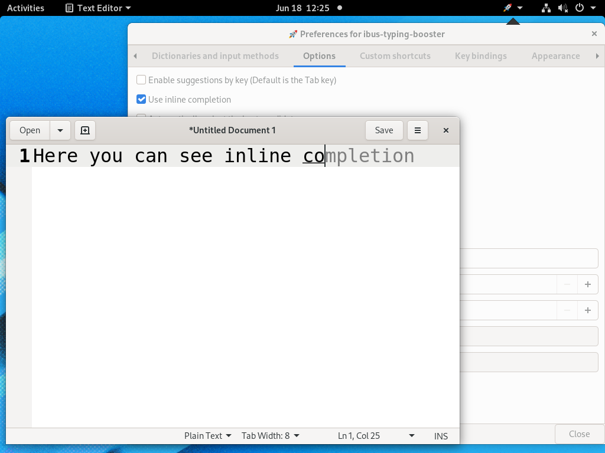
Very often, the first candidate shown as a suggestion is already the desired one, especially after having used ibus-typing-booster for a while and it has learned what the user types often in what context.
When one ends up selecting the first candidate most of the time, popping up a candidate list with more candidates all the time is needlessly visually distracting.
When the option “Use inline completion” is checked, the first and most likely candidate is shown inline at the writing position without popping up a candidate list. The characters one has already typed are shown in the current foreground colour (black in the screenshot) and are underlined (Unless underlining the preedit has been switched off in the “Apperance” settings). The completion which is suggested is shown without the underline and in a different colour. This colour is gray by default because this works in most cases, it also works when the foreground text colour is white and the background black. The colour to be used for the inline completion can be chosen in the “Appearance” tab. One can also choose not to use a different colour, then the only difference in style between the completion and the already typed characters is the missing underline under the completion.
This inline completion style looks much nicer than always popping up a candidate list when the predictions are fairly good and the first candidate is often the desired one.
If that first candidate shown inline is what one wants, one can select it by typing any of the keys bound to the “select_next_candidate” command (Tab and arrow down by default).
When the candidate is selected, the style of the completion becomes the same as the style of the already typed characters and the cursor moves to the end of the completion.
Now one could commit it for example by typing space and continue typing the next word of the text.
Or, if that candidate displayed inline happens to be not the desired one, it is still possible to pop up a full candidate list with more candidates by pressing the key bound to the “select_next_candidate” command again. And then walk down the candidate list by continue pressing that key. If nothing appropriate can be found in the whole candiate list, one can use the key bound to the command “cancel” (the Escape key by default) to deselect all candidates and close the candidate list. Then one could type more input characters and hope that better suggestions become available after typing a bit more.
One can also ignore the candidate displayed inline completely and just continue typing more input characters until a better candidate is displayed.
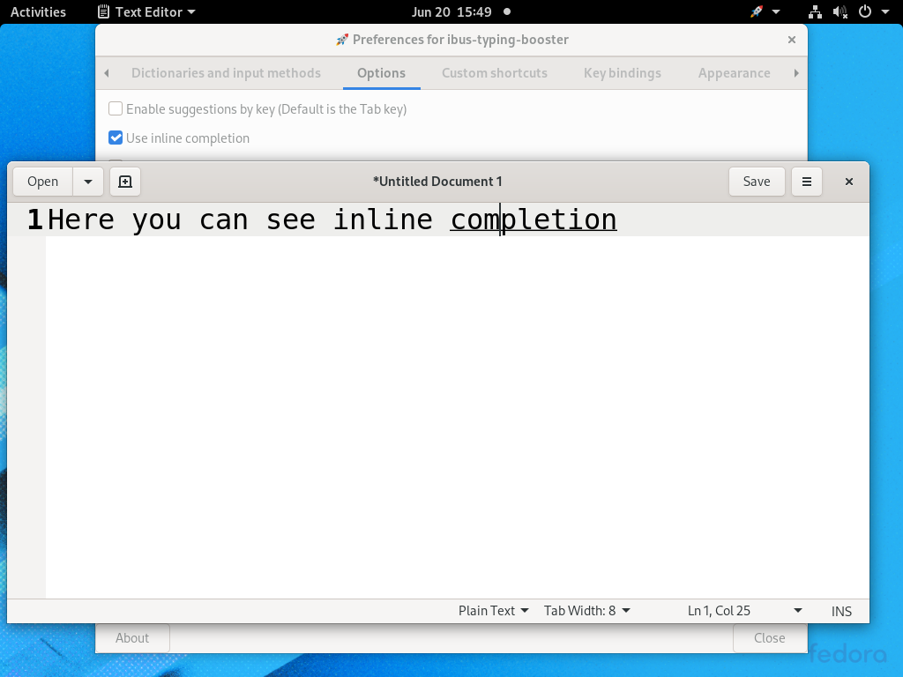 Attention when using Wayland: Currently it is not possible to do any style changes to the preedit on Wayland. On Wayland the preedit is always underlined and always has the same foreground and background colour as normal text, no matter what options to influence the preedit style are chosen in the setup tool of ibus-typing-booster. That is a missing feature in Wayland.
This makes the “Use inline completion” option quite hard to use on Wayland. It is possible to use it, but as the characters typed and the suggested completion are displayed in exactly the same style, it is quite hard to see what has been typed and what is the completion. If one looks carefully, one can still see it because the cursor can be seen at the end of the typed characters, everything to the right of the cursor is the suggested completion. If the completion is selected by typing the key bound to the “select_next_candidate” command (Tab by default), then the cursor moves to the end of the completion.
One can get used to the fact that the difference between the typed text and the inline completion is hard to see on Wayland, but I found this to be quite hard.
2_2_3
Spellchecking
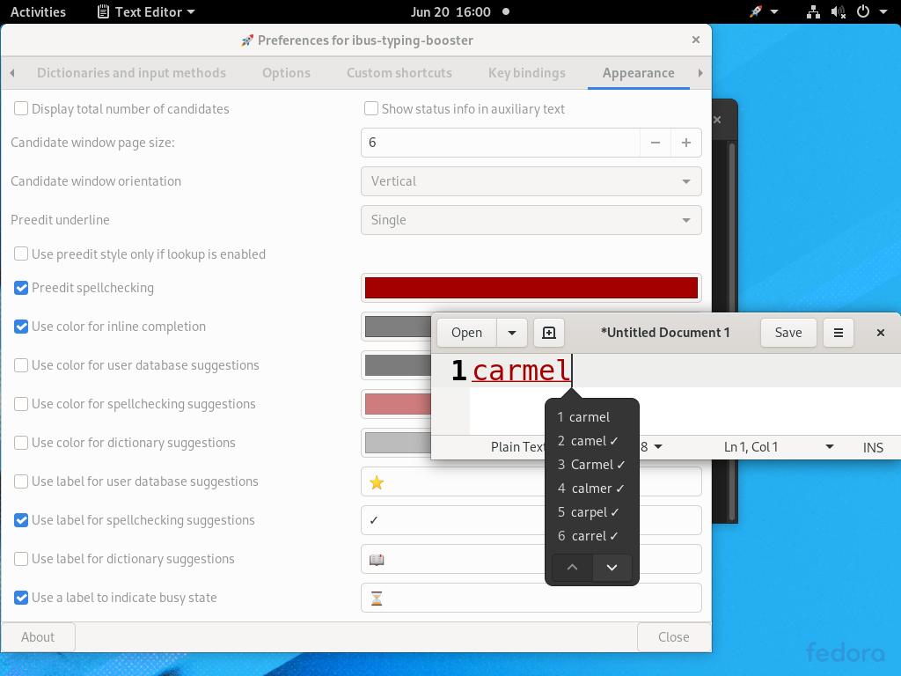
ibus-typing-booster also does spellchecking (Using hunspell for most languages and voikko for Finnish).
If a word is typed which might contain a spelling error, the candidate list of suggestions may contain suggestions for spelling corrections, i.e. words which are not just completing the text already typed to something longer or fixing some accents but “seriously” changing the characters already typed, more than just fixing accents, i.e. completely different characters or another order of characters.
Optionally, such spellchecking suggestions can be marked in the candidate list with a symbol or using a different colour in the candidate list. The symbol and color can be chosen.
One can also choose to mark candidates which are (accent insensitive) completions of the typed word with a symbol and/or colour if they are valid words in one of the dictionaries.
And one can choose to mark candidates which are (accent insensitive) completions of the typed word with a symbol and/or colour if they have been remembered in the user database because the user has typed them before.
All of these markings can help to get the spelling right, for example if one uses a French dictionary and types “egali” and sees “égalité” and “égalisation” marked as “dictionary suggestions” in the candidate list, then one knows that these candidates are valid words in the French dictionary and what one typed was identical to the beginning of these candidates except for differents in accents.
It can also speed up typing not bothering typing the accents at all (because this often requires extra key strokes) and then select the correctly accented word from one of the “dictionary suggestions”.
Colour in the candidate list does not work when using Gnome, only on other desktops colour can be used in the candidate list. Marking spellchecking suggestions with a symbol also works on Gnome. By default, neither colour nor symbols are used for suggestions.
Indicating spelling errors in the preedit
One can choose that the preedit changes colour when the typed word is not a valid word in any of the dictionaries setup in the ”Dictionaries and input methods” tab of the setup tool.
For example, if one uses an English and a French dictionary, and the typed word in the preedit is neither a valid word in English nor in French, then the preedit changes colour. This is also shown in the above screenshot using the default colour red.
Dictionaries where spellchecking is not supported are ignored for this colour change. For example, if one uses an English, a French, and a Japanese dictionary at the same time, the preedit still changes colour if the word is neither a valid English nor a valid French word. Whether the typed word is in the Japanese dictionary or not doesn’t matter because the Japanese dictionary does not support spellchecking.
Attention when using Wayland: On Wayland it is not possible to indicate a possible spelling error in the preedit.
Currently it is not possible to do any style changes to the preedit on Wayland. On Wayland the preedit is always underlined and always has the same foreground and background colour as normal text, no matter what options to influence the preedit style are chosen in the setup tool of ibus-typing-booster. That is a missing feature in Wayland.
3
Key and Mouse bindings
3_1
The “AltGr” key
Ibus-typing-booster does not change your keyboard layout, it just uses the keyboard layout which was selected last.
As some of the default key bindings in the table below use key combinations starting with “AltGr”, it is recommended to use a keyboard layout where the right “Alt” key is really an “AltGr” key and not just a duplicate of the left “Alt” key. If you do not have a real “AltGr” key, you can still use most of the key bindings in the table below but of course not those which start with “AltGr”. In that case, you might want to use the setup tool to customize your key bindings.
The standard “English (US)” keyboard layout makes the “AltGr” key on the right side of the space bar basically behave as a duplicate of the left “Alt” key. So if you like the US English layout, better use the keyboard layout “English (US, with euro on 5)” instead of the standard one. “English (US, with euro on 5)” is very similar to the standard “English (US)” layout but has a real “AltGr” key.
Many (but not all) keyboard layouts for other languages different from US English already have a real “AltGr” key.
You can check whether your keyboard layout has a real “AltGr” key with “xev”, “xev” should show you the keysym “ISO_Level3_Shift” when pressing the “AltGr” (right “Alt”) key and not the keysym “Alt_R”.
3_2
Table of default key bindings
Some of these key bindings can be customized in the setup tool, see Customizing key bindings. The following table explains the defaults.
| Key combination | Effect |
|---|---|
| Space | Commit the preëdit (or the selected candidate, if any) and send a space to the application, i.e. commit the typed string followed by a space. |
| Return | Commit the preëdit (or the selected candidate, if any) and send a Return to the application. |
| Enter | Commit the preëdit (or the selected candidate, if any) and send a Enter to the application. |
| Tab |
Bound by default to the commands “select_next_candidate” and “enable_lookup”.
|
| Shift+Tab |
Bound by default to the command “select_previous_candidate”.
Selects the previous candidate in the candidate list. |
| Escape |
Bound by default to the command “cancel”.
|
| Left (Arrow left) | Move cursor one typed key left in the preëdit text. May trigger a commit if the left end of the preëdit is reached. |
| Control+Left | Move cursor to the left end of the preëdit text. If the cursor is already at the left end of the preëdit text, trigger a commit and send a Control+Left to the application. |
| Right (Arrow right) | Move cursor one typed key right in preëdit text. May trigger a commit if the right end of the preëdit is reached. |
| Control+Right | Move cursor to the right end of the preëdit text. If the cursor is already at the right end of the preëdit text, trigger a commit and send a Control+Right to the application. |
| Backspace | Remove the typed key to the left of the cursor in the preëdit text. |
| Control+Backspace | Remove everything to the left of the cursor in the preëdit text. |
| Delete | Remove the typed key to the right of the cursor in the preëdit text. |
| Control+Delete | Remove everything to the right of the cursor in the preëdit text. |
| Down (Arrow down) |
Bound by default to the command “select_next_candidate”.
Selects the next candidate. |
| Up (Arrow up) |
Bound by default to the command “select_previous_candidate”.
Selects the previous candidate. |
| Page_Up |
Bound by default to the command “lookup_table_page_up”.
Shows the previous page of candidates. |
| Page_Down |
Bound by default to the command “lookup_table_page_down”.
Shows the next page of candidates. |
| F1 | Commit the candidate with the label “1” followed by a space |
| F2 | Commit the candidate with the label “2” followed by a space |
| ... | ... |
| F9 | Commit the candidate with the label “9” followed by a space |
| Control+F1 | Remove the candidate with the label “1” from the database of learned user input (If possible, if this candidate is not learned from user input, nothing happens). |
| Control+F2 | Remove the candidate with the label “2” from the database of learned user input (If possible, if this candidate is not learned from user input, nothing happens). |
| … | … |
| Control+F9 | Remove the candidate with the label “9” from the database of learned user input (If possible, if this candidate is not learned from user input, nothing happens). |
| 1 … 9 | Same as F1 … F9 if the option “Use digits as select keys” is enabled. Enabling that option makes selecting candidates a bit easier because the number keys 1 … 9 are closer to the fingers then F1 … F9 on most keyboards. On the other hand, it makes completing when typing numbers impossible and it makes typing strings which are combinations of letters and numbers like “A4” more difficult. If digits are used as select keys, numbers can only be typed when no candidate list is shown. In most cases this means that numbers can only be typed when nothing else has been typed yet and the preëdit is empty. |
| Control+1 … Control+9 | Same as Control+F1 … Control+F9 if the option “Use digits as select keys” is enabled. |
| AltGr+F6 |
Bound by default to the command “toggle_emoji_prediction”.
Toggle the emoji and Unicode symbol prediction on/off. This has the same result as using the setup tool to change this. |
| AltGr+F9 |
Bound by default to the command “toggle_off_the_record”.
Toggle the “Off the record” mode. This has the same result as using the setup tool to change this. While “Off the record” mode is on, learning from user input is disabled. If learned user input is available, predictions are usually much better than predictions using only dictionaries. Therefore, one should use this option sparingly. Only if one wants to avoid saving secret user input to disk it might make sense to use this option temporarily. |
| AltGr+F10 |
Bound by default to the command “setup”.
Opens the setup tool. |
| AltGr+F12 |
Bound by default to the command “lookup_related”.
Shows related emoji and Unicode symbols or related words |
| AltGr+Space | Insert a literal space into the preëdit. |
When more than one input method at the same time is used, the following additional key bindings are available:
| Key combination | Effect |
|---|---|
| Control+Down |
Bound by default to the command “next_input_method”.
Switches the input method used for the preëdit to the next input method. |
| Control+Up |
Bound by default to the command “previous_input_method”.
Switches the input method used for the preëdit to the previous input method. |
3_3
Mouse bindings
These mouse bindings are currently hardcoded and can not yet be customized.
| Mouse event | Effect |
|---|---|
| Button 1 click on a candidate | Commit the candidate clicked on followed by a space (Same as F1…F9). |
| Control + Button 1 click on a candidate | Remove clicked candidate from database of learned user input (If possible, if this candidate is not learned from user input, nothing happens). |
| Button 3 click on a candidate | Show related emoji and Unicode symbols or related words (Same as AltGr+F12). |
| Control + Button 3 click anywhere in the candidate list | Toggle the emoji and Unicode symbol prediction on/off (Same as AltGr+F6). This has the same result as using the setup tool to change this. |
| Alt + Button 3 click anywhere in the candidate list |
Toggle the “Off the record” mode (Same as AltGr+F9). This has the
same result as using the setup tool to change this.
While “Off the record” mode is on, learning from user input is disabled. If learned user input is available, predictions are usually much better than predictions using only dictionaries. Therefore, one should use this option sparingly. Only if one wants to avoid saving secret user input to disk it might make sense to use this option temporarily. |
3_4
Customizing key bindings
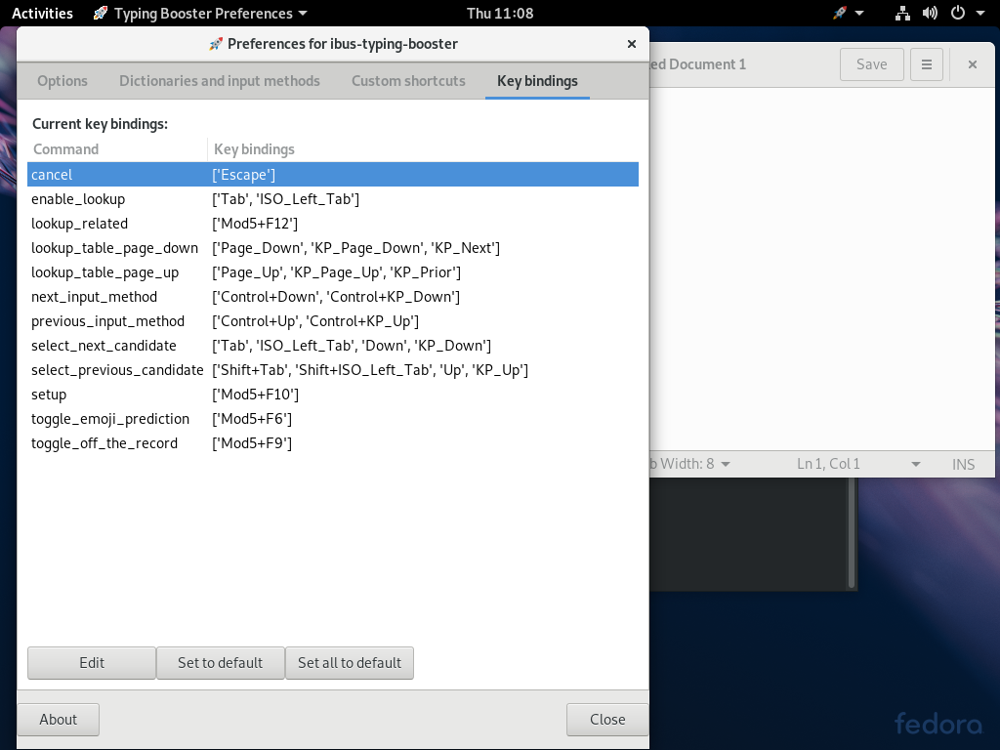 This screenshot shows the “Key bindings” tab of the setup tool of ibus-typing-booster. Here one can change the keybindings for some commands of ibus-typing-booster.
This screenshot shows the default settings. For example, as seen in the screenshot, the Tab key is bound by default to the commands “enable_lookup” and “select_next_candidate”. If one wants to use the Tab key for something else, maybe because the application one is typing into needs the Tab key for something, one could change the settings here and use other keys for “enable_lookup” and “select_next_candidate”.
And can also see in the screenshot that some commands are bound by default to Mod5+something. Mod5 is Usually ISO_Level3_Shift and this is mapped to the AltGr key on many keyboard layouts, see also The “AltGr” key. If your keyboard layout does not have that key, you might want to change these settings.
4
Multilingual input
 Ibus-typing-booster supports using more than one dictionary and more than one input method/transliteration at the same time.
Ibus-typing-booster supports using more than one dictionary and more than one input method/transliteration at the same time.
That makes it possible to write text in more than one language without having to switch languages manually. If one often writes in different languages this can save a lot of input method switching.
This works not only when the languages use same script (like using English and Spanish at the same time), it works even when the languages use different scripts. For example when using English (Latin script) and Hindi (Devanagari script) at the same time. When using languages with different scripts at the same time, it is sometimes necessary to switch the input method for the preëdit (See the Hindi and English example). But even in such a more complicated case, switching is often not necessary, often one can select a suitable candidate without switching and save a lot of input method switches.
-
This screenshot shows how dictionaries can be added using the “+” button below the list of dictionaries in the “Dictionaries and input methods” tab of the setup tool.
The check marks (“✔️”) and the cross marks (“❌”) indicate whether a spellchecking dictionary and/or and emoji dictionary for that language/locale is currently available on your system. If a dictionary is shown with a cross mark (“❌”) as not available, that does not necessarily mean that it is not available at all for your system, maybe you just need to install an additional package.
For obscure technical reasons, the maximum number of dictionaries you can use at the same time is currently limited to 10. But that should be plenty, one should not overdo it, the more dictionaries one adds, the slower ibus-typing-booster becomes and the prediction quality suffers. So only add the dictionaries you really need.
-
This screenshot shows how input methods can be added to ibus-typing-booster using the “+” button below the list of input methods in the “Dictionaries and input methods” tab of the setup tool.
For obsure technical reasons the maximum number of input methods you can currently use at the same time is limited to 10. But that should be plenty.
One should only add as many input methods as one really needs, adding more would only slow down the system and reduce the accuracy of the predictions.
-
This screenshot shows how one can try to install missing dictionaries, i.e. dictionaries marked with a cross mark (“❌”) by clicking on the “Install missing dictionaries” button. Because this button has been clicked, one can see a black box with the text “Additional Packages Required” “An application is requesting additional packages.” near the top of the screen, just below the Gnome panel. When clicking that black box, the package manager will try to install packages for the missing dictionaries, if possible. For “fr_FR” (French) this will succeed on Fedora 29 and install the “hunspell-fr” package. For “zh” (Chinese) and “ja_JP” Japanese this will not succeed, there are no hunspell dictionaries for these languages on Fedora 29. That does not mean that adding the “zh” and “ja_JP” dictionaries in the setup tool is pointless, the check mark (“✔️”) is shown after emoji. That means emoji dictionaries for these languages are available and even installed at the moment. So if you want to match emoji in Chinese or Japanese, these dictionaries could still be useful.
4_1
Example using Hindi and English at the same time
 If one uses both Hindi and English often, it is possible to setup ibus-typing-booster to use both languages at the same time. Then one can just type in either Hindi or English and ibus-typing-booster will show suitable candidates automatically.
If one uses both Hindi and English often, it is possible to setup ibus-typing-booster to use both languages at the same time. Then one can just type in either Hindi or English and ibus-typing-booster will show suitable candidates automatically.
-
This screenshot shows how to setup ibus-typing-booster to use Hindi and English at the same time.
In the “Dictionaries and input methods” tab of the setup tool one can see that two dictionaries have been added, “hi_IN” for Hindi and “en_GB” for British English.
And two input methods have been added, “hi-itrans” to type Hindi and “NoIme” (“Native Keyboard”, i.e. direct keyboard input) to type English.
There are several input methods available for Hindi: “hi-inscript2”, “hi-inscript”, “hi-phonetic”, “hi-itrans”, “hi-remington”, “hi-typewriter”, and “hi-vedmata”. In this example we use “hi-itrans” but one could also use any of the others or even several at once.
-
If more than one input/transliteration method is enabled, the typed keys will be transliterated with each transliteration method and each transliteration result will be looked up in the enabled dictionaries and in the user database of previous input.
In this screenshot, Hindi with the “hi-itrans” method and English are used at the same time. One can see that the input “guru” has been typed. The candidate list shows both “गुरु” (which is the transliteration of the input “guru” using the “hi-itrans” method) and the English candidates “guru” and “gurus”. This is because both the transliteration “गुरु” and the direct input “guru” are used at the same time to lookup candidates.
Actually it is quite rare to see candidates from both Hindi and English in a candidate list. The English word “guru” is a loanword from Hindi, it is just the transliteration of the original Hindi word into the Latin Alphabet. Therefore, the “Itrans” method transliterates it back to Hindi and one gets a match in Hindi as well. Most English words do not transliterate to anything meaningful in Hindi and most Hindi input does not match anything in English either. The example “guru” is carefully chosen to show how ibus-typing-booster handles multilingual input.
In practice, as soon as one has typed a few characters, one will most of the time see only candidates from either Hindi or English, not both. I.e. the language one is typing in at the moment is automatically detected because one very rarely gets matches in the other language.
This automatic language detection works even better after ibus-typing-booster has learned from user input for a while. Because ibus-typing-booster remembers the context where the user has typed words.
-
This screenshot uses the same setup, Hindi (“hi-itrans”) and English. The same input “guru” has been typed and the matches shown in the candidate list are the same.
The difference is that the “hi-itrans” transliteration “गुरु” is shown in the preëdit this time (preëdit is the current input, i.e. the underlined text next to the candidate list). And in the status line above the first candidate, one can see “hi-itrans”.
The reason for this difference is that for this screenshot, the input method to be used for the preëdit has been switched to “hi-itrans”.
Switching the input method for the preëdit is sometimes necessary because one may not want to select any of the displayed candidates but commit the preëdit instead by typing a space. For example, if the preëdit is currently in English mode (direct input mode) and one types a Hindi word, it may happen that one does not get any matches in the candidate list, although the word has been typed correctly. This may happen if this word can neither be found in the dictionary nor in the user database because this word has never been typed before by the user. Nevertheless it may be a correct Hindi word of course and the user may want to commit it. But if the preëdit is currently in English mode, typing space would commit the Latin characters. So one has to switch the preëdit to “hi-itrans” first and then commit by typing a space.
The key bindings to switch the input method for the preëdit are “Control+Down” and “Control+up”. With only two input methods as in the current example, both key bindings behave the same. But there can be more than two input methods and then “Control+Down” moves in one direction through the list of input methods and “Control+Up” in the other direction (see key and mouse bindings).
-
This screenshot shows the options tab of the setup tool and the options for ibus-typing-booster in the input method menu of the gnome panel.
As an alternative to using the “Control+Down” and “Control+Up” key bindings, the input method for the preëdit can also be switched using the menu in the gnome panel.
In the setup tool, there is an option “Remember last used preëdit input method”. If that option is disabled, ibus-typing-booster will always start using the input method with the highest priority in the setup tool for the preëdit when you log in to your desktop and use ibus-typing-booster for the first time after the login. In our setup shown in the previous screenshot, the input method with the highest priority is “NoIme”, i.e. direct keyboard input. If the option to remember the last used preëdit input method is enabled, ibus-typing-booster will change the priority in the setup when you switch to a different input method for the preëdit using the key bindings or the Gnome panel. That way, ibus-typing-booster will remember which input method was used last when you logged out of your desktop and start using that the next time you log in.
4_2
Example using Spanish and English at the same time
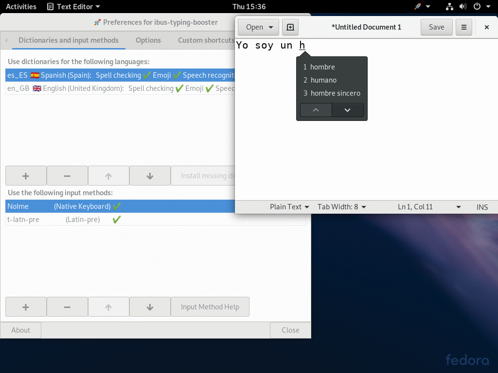
-
This example shows using ibus-typing-booster for Spanish and English at the same time. In the setup tool, dictionaries for Spanish (“es_ES”) and British English (“en_GB”) have been added. And two input methods “t-latn-pre” and “NoIme” (Native Keyboard, i.e. direct keyboard input) have been added. Actually using only “NoIme” would have been enough, both Spanish and English can be typed just fine with direct keyboard input with a suitable keyboard layout. Adding “t-latin-pre” makes it possible to type for example “~n” to get an “ñ”, i.e. using “t-latn-pre” one can type accented Latin charaters even when using a US English keyboard layout for example. But that is completely optional, one can use only “NoIme”, only “t-latn-pre”, or both, depending on what keyboard layout one wants to use and what is most convenient.
The input typed is “Yo soy un h” where the last character, the “h” is still in preëdit (marked by the underline) and we see some suggestions how the word starting with “h” might continue.
The suggestions shown are Spanish words, not English. This is because ibus-typing-booster has already been trained by similar user input before. Therefore, it already knows which word starting with “h” the user usually types following “soy un”. And these are Spanish words.
-
This screenshot shows how the user continues to type some English after finishing the Spanish sentence.
The input typed is now “I am h” and again the last character “h” is still in preëdit and some suggestions for words starting with “h” are shown.
This time, the suggestions for words starting with “h” are English, not Spanish. This is because the words typed before were “I am” and the user apparently types the suggested English words frequently after “I am”.
So ibus-typing-booster can often automatically show candidates from the correct language according to the context. This makes it quite efficient to type multiple languages.
One can add as many dictionaries as one likes, but adding more dictionaries than one really needs slows the system down unnessarily and reduces the prediction accuracy.
5
Unicode symbols and emoji predictions
ibus-typing-booster supports prediction of emoji and Unicode symbols as well (actually almost all Unicode characters except letters can be typed this way). This can be enabled or disabled with the option “Emoji predictions” in the setup tool which is on by default.
To make all emoji display correctly, you need good fonts which contain all emoji, see Emoji fonts for details about available fonts and font setup.
5_1
Emoji input

When the emoji option is on (it is off by default), you get emoji displayed in the candidate list automatically when typing something which matches an emoji.
For example in this screenshot, the user has typed “castle” and the emoji 🏰 (U+1F3F0 EUROPEAN CASTLE) is shown as the last candidate of the first page of the candidate list.
If reasonable matches for emoji are found, the first match is shown as the last candidate of the first page of the candidate list. If more than one emoji has matched the input, the other matches can be found by scrolling down to the next page of candidates. If an emoji is selected and committed, it will be remembered just like ibus-typing-booster remembers other words and will be shown with higher priority next time.
The screen shot shows coloured emoji, to make that work see Showing emoji in colour. By default, emoji will be shown in black and white on current linux distributions.
5_2
Emoji input fuzzy matching
 ibus-typing-booster tries to match the emoji names in a fuzzy way, in many cases you will get a match even if your input contains spelling mistakes.
ibus-typing-booster tries to match the emoji names in a fuzzy way, in many cases you will get a match even if your input contains spelling mistakes.
In this example, the typed input is “casle”, i.e. not spelled correctly. Nevertheless, one gets the match 🏰 (U+1F3F0 EUROPEAN CASTLE).
5_3
Emoji input using multiple keywords
 If typing a single word does not give you the emoji you are looking for, you can type as many keywords as you like and concatenate them with underscores “_” (Or spaces “ ”. Typing space usually commits the preëdit, but you can insert literal spaces into the preëdit by typing AltGr+Space).
If typing a single word does not give you the emoji you are looking for, you can type as many keywords as you like and concatenate them with underscores “_” (Or spaces “ ”. Typing space usually commits the preëdit, but you can insert literal spaces into the preëdit by typing AltGr+Space).
In a previous example, typing “castle” gave us the match 🏰 (U+1F3F0 EUROPEAN CASTLE). If this is not what we wanted we can type “castle_japanese” (or “japanese_castle”) to get 🏯 (U+1F3EF JAPANESE CASTLE). Even “castlejapanese” and “japanesecastle” work in this case, but separating the search words with underscores or spaces makes it easier for the matching algorithm.
5_4
Looking up related emoji

It is also possible to look up related emoji which may not have matched the typed text well but are related to the emoji shown because they share keywords or categories.
To show related emoji, click an emoji shown in the candidate list with the right mouse button (see Mouse bindings).
Or, if you prefer to use a key binding instead of the mouse: select an emoji in the candidate list by moving up or down in the candidate list using the arrow-up/arrow-down keys or the page-up/page-down keys until the desired emoji is highlighted, then press AltGr+F12.
AltGr+F12 is the key binding to “lookup related stuff”. If you press this while no candidate is selected, a lookup of related stuff for the preëdit is tried. In this case, the preëdit contains the text “castle” which is not an emoji. So no related emoji will be found. But if NLTK is used, related words for “castle” may be shown, see Using NLTK to find related words.
As seen in the screen shot, looking up related emoji for the “Japanese castle” gives us emoji for other types of castles or buildings. The lists of words shown in square brackets are the keywords the shown emoji have in common with the originally selected emoji. By typing the “Escape” key, one can go back to the original list.
5_5
Multilingual emoji input
5_5_1
Emoji input using German and English

-
In this example, the German typing booster is used with English as a second language. Therefore, one can use both the English word “castle” or the German word for castle “Schloss” to find castle emoji.
In the screen shot, the input typed is “Schloss_europa” and the emoji matches shown are 🏰 (U+1F3F0 EUROPEAN CASTLE), 🔒 (U+1F512 LOCK), and 🏯 (U+1F3EF JAPANESE CASTLE).
The German word “Schloss” can mean “castle” as well as “lock”. Therefore, the padlock emoji 🔒 (U+1F512 LOCK) matches as well.
 2. Let’s look up related emoji by clicking the candidate number 5, “Geschlossenes Schloss” 🔒 (U+1F512 LOCK) with the right mouse button (See Looking up related Emoji).
2. Let’s look up related emoji by clicking the candidate number 5, “Geschlossenes Schloss” 🔒 (U+1F512 LOCK) with the right mouse button (See Looking up related Emoji).
We get several variants of padlock emoji, the European castle and some closed mailboxes because “geschlossen” in German can also mean “closed”.
By the way, the related emoji shown in the screen shot have German names and keywords. That’s because this example uses German as the main language for ibus-typing-booster with English as a second language (See Multilingual input). When looking up related emoji, they are shown in all languages ibus-typing-booster is setup to use, but they are sorted in the order of preference of the languages. So German is on top because it is the main language. To see emoji whose English keywords are related to the emoji 🔒 (U+1F512 LOCK), one can scroll further down in the candidate list. These are of course labelled in English.
5_5_2
Emoji input using Hindi and English

-
This screenshot shows another example using Hindi as the main language and English as a second language.
The input typed is “namaste”, with the transliteration method “hi-itrans” this is transliterated to “नमस्ते” which is currently shown in the preëdit (For details about multilingual input and how to switch the script shown in the preëdit, see Multilingual input).
Both “namaste” and “नमस्ते” are used to search for matching words and emoji. Only “नमस्ते” matches an emoji which can be seen in the candidate list (🙏 U+1F64F PERSON WITH FOLDED HANDS).

-
Of course one can lookup related emoji here as well.
Here we have clicked with the right mouse button on the 🙏 U+1F64F PERSON WITH FOLDED HANDS emoji and get emoji which are related because they share keywords in Hindi.
And of course, because of the multilingual Hindi+English setup there will be emoji which are related because they share keywords in English further down in the candidate list.
5_5_3
Emoji input using Japanese
To be able to input emoji using their Japanese names, one first needs to install the packages m17n-db-extras, m17n-lib-anthy and anthy on Fedora. On Fedora 28 one can do this using the command:
sudo dnf install m17n-db-extras m17n-lib-anthy
This should work on other distributions as well, but the package names may be different. You need the package which contains the /usr/share/m17n/ja-anthy.mim file and other packages which are required to make the ja-anthy input method of the m17n library work.
Then one needs to add the “ja-anthy” input method and the Japanese dictionary (“ja_JP”) to the setup of ibus typing booster. For details how to add input methods and dictionaries see Multilingual input.

-
Now one can type emoji keywords using Japanese. For example when typing “katasumuri” (which means “snail”), one gets the emoji 🐌 (U+1F40C SNAIL) listed as a candidate.
It is labelled in the candidate list in Japanese hiragana syllables, i.e. “かたつむり”. The Latin “katatsumuri” was transliterated by the ja-anthy input method to “かたつむり” and this was then looked up in the dictionaries. The Latin text “katatsumuri” was of course looked up as well but of course produced no match.

-
Here we have switched the input method used in the preëdit to ja-anthy with “Control+Down” or “Control+Up”.
That makes no difference for the matches, still both “katatsumuri” and “かたつむり” are looked up in the dictionaries. Only when committing the preëdit now by typing a space, we would commit the hiragana “かたつむり”.

-
Of course we can lookup related emoji here as well.
Here we have clicked with the right mouse button on the 🐌 (U+1F40C SNAIL) emoji and get emoji which are related because they share keywords in hiragana (They share the keyword “むし” = “mushi” which means insect.
And of course, because of the multilingual Japanese+English setup there will be emoji which are related because they share keywords in English further down in the candidate list.
5_6
Unicode symbol input
Using the emoji input mode of ibus-typing-booster, one cannot only input emoji but other Unicode symbols as well. Actually almost all Unicode characters can be typed this way (Except most letters, because letters can usually typed much faster directly).

- This screenshot shows how the emoji mode can be used to input mathematical symbols. You can also combine keywords using “_”, i.e. type something like “volume_integral” to get more specific matches (see Emoji input using multiple keywords).

- Here the emoji mode is used to input something like U+202C POP DIRECTIONAL FORMATTING or U+2069 POP DIRECTIONAL ISOLATE. These are formatting characters used in scripts which use right-to-left direction.
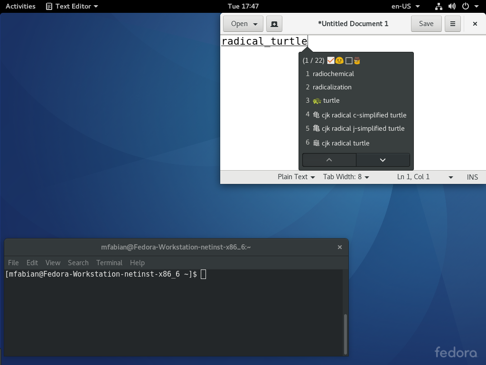 3. Here the emoji mode is used to input the CJK radical “turtle”. Anything in Unicode except letters is possible.
5_7
Unicode code point input

The emoji mode of ibus-typing-booster can also be used to input any character using hexadezimal Unicode code points.
To be able to input hexadecimal numbers without problems, the option “Use digits as select keys” should be switched off in the setup tool. If this option were switched on, typing a digit like “1” would select the candidate with the number one instead of inserting the digit “1” into the preëdit.
If the option “Use digits as select keys” is switched off, one can still use the F1-F9 keys to select candidates (and of course one can select candidates with the mouse).
In this example, “100” has been typed and one gets the matches 💯 U+1F4AF HUNDRED POINTS SYMBOL which is an emoji which has been matched because of its alternative name “100” and Ā U+0100 LATIN CAPITAL LETTER A WITH MACRON which has been matched because it has the Unicode code point 100 (hexadezimal).
It is quite rare that typing a Unicode code point matches an emoji as well. There will never be many candidates when typing Unicode code points.
5_8
Quickly toggling emoji mode on and off

When emoji mode is on, finding the matching candidates can be considerably slower compared to when emoji mode is switched off. Especially if the emoji lookup is done in multiple languages at the same time. In this case, there may be a noticeable delay until the candidate list pops up.
Therefore, one may want to switch emoji mode off for maximum speed.
Always opening the setup tool to switch emoji mode on if one occasionally wants to input an emoji would be inconvenient. Therefore, emoji mode can also be toggled with a mouse binding (Control+Button3 anywhere in the candidate list toogles emoji mode between on and off) or with a key binding (AltGr+F6 toggles emoji mode between on and off).
But there is an even faster way to temporarily switch on emoji mode just for the current lookup.
In this screenshot we can see that emoji mode is off because the box to the left of the smiley above the candidate list is not checked (and one can see that “Unicode symbols and emoji predictions” is not checked in the setup tool either).
Nevertheless we get matches for two camel emoji. This is because the input typed is “camel_” which contains a trailing underscore. Trailing and leading underscores temporarily turn on emoji mode just for this one lookup.
5_9
Emoji picker
ibus-typing-booster contains an “emoji-picker” tool which can be used independently from ibus-typing-booster, i.e. even when ibus-typing-booster is not running.
In Fedora, “emoji-picker” is packaged as sub-package of ibus-typing-booster named “emoji-picker”, so you can install it with:
$ sudo dnf install emoji-picker

-
Clicking on an emoji shown in “emoji-picker” puts it into the clipboard and you can then paste it somewhere using Control+V or the middle mouse button.
Clicking the right mouse button on an emoji shown in “emoji-picker” shows the emoji much bigger and some extra information about that emoji, like the Unicode code point(s), the name and search keywords of the emoji in all chosen languages, the fonts really used to render this emoji, the Unicode version this emoji first appeared in, and a link to lookup this emoji in emojipedia.
The fonts really used to render an emoji may differ from the font chosen in the user interface of emoji picker because:
- The chosen font may have no glyph for a certain emoji. In that case, if there is any other font installed on the system which has that emoji, a fallback font will be used to render the emoji. The info popover shown on right mouse click will show which font was really used, i.e. it enables one to see which font was used as a fallback.
- Some emoji are sequences of several code points and with some fonts (or when there are bugs in the rendering system), it may not be possible to render the sequence correctly and one may see individual parts of the sequence rendered seperately, possibly even different parts of the sequence in different fonts. The info popover shown on right mouse click shows which font was used for which part of the sequence which is helpful to debug such problems.
“emoji-picker” has some command line options to choose the languages, the font and the fontsize. For example, emoji-picker –languages de:en:fr would enable you to use German, English, and French to browse and search for emoji and display the names of the emoji in all of these languages. If the command line option is not used, the languages are taken from the environment variables. The LANGUAGE variable works as well. For example, LANGUAGE=de:en:fr emoji-picker also chooses German, English, and French. And, LANG=de_DE.UTF-8 emoji-picker would choose only German (English is always implicitly added though.)
The command line options to choose a different font or font size can be used like this: emoji-picker –font “Noto Color Emoji” –fontsize 32 The command line font optionis override the font options in the graphical user interface.
For more about emoji fonts and colour, see Emoji fonts.

-
“emoji-picker” also has a “Search” feature where you can type a search string and get matching emoji listed.
Again you can click on one of the matches to put it into the clipboard and paste it elsewhere.
And hovering with the mouse over a match shows the emoji bigger and some extra information.
The search string can be in any of the languages specified by the environment variables or on the command line.

-
Emoji can also be selected with different skin tones. If the mouse hovers over an emoji for which different skin tones are available, a tooltip says “Long press or middle click for skin tones”. Long pressing such an emoji with the left mouse button or clicking it with the middle mouse button pops up a menu showing all the skin tone variants. One can then click on any variant with the left mouse button to put it into the clipboard and paste it elsewhere.
Which skin tone was last used is remembered, i.e. the emoji shown before opening the menu for the skin tones is the emoji with the skin tone variant used last for this emoji.
Clearing the recently used characters resets all emoji to neutral skin tone by default.
5_10
Emoji fonts
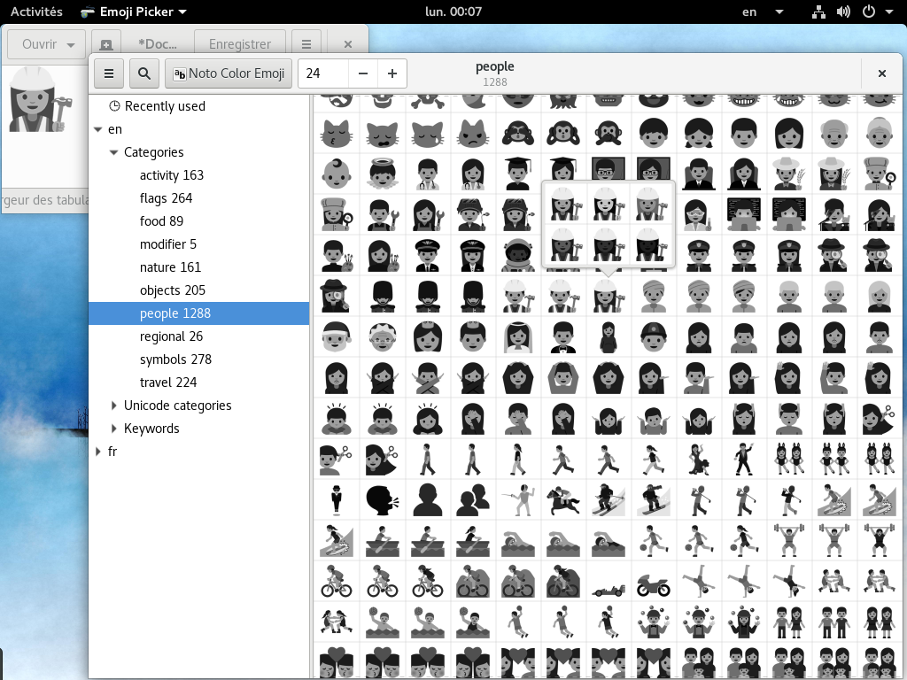
-
The font which currently works best for emoji on Linux is the “Noto Color Emoji” font. On Fedora, this font is in the “google-noto-emoji-fonts” package, on openSUSE in the “noto-coloremoji-fonts” package. If the version packaged for your distribution is not up-to-date, you can get the most recent version here: https://www.google.com/get/noto/. (Search for “Noto Color Emoji”).
Without the experimental Cairo patch (See Showing emoji in colour), the “Noto Color Emoji” font will render in grayscale, but even that looks much better already than fonts wich render only in black and white.
“emoji-picker” will use the “Noto Color Emoji” font by default, if it is installed. To make sure that “Noto Color Emoji” is also your preferred font for emoji in other programs and not only in “emoji-picker”, you can use a fontconfig setup as in this example fonts.conf file. file and store the file at
~/.config/fontconfig/fonts.conf.If you do not yet have a
~/.config/fontconfig/fonts.conf file, create one with the contents as above. If you already have such a file but no “alias” settings exist, add the part defining the aliases. Or if you already have “alias” settings in your~/.config/fontconfig/fonts.conffile, edit them.“DejaVu Serif”, “DejaVu Sans”, and “DejaVu Sans Mono”, are just examples, put your favorite fonts for Latin and other scripts below the fonts for emoji in the
~/.config/fontconfig/fonts.confsetup file.If you don’t give a good emoji font like “Noto Color Emoji” the highest priority in the fontconfig setup, the highest priority font may be a font which already has some emoji. For example, “DejaVu Sans” already has many emoji, but not all. I.e. when “DejaVu Sans” has highest priority and is tried first, all emoji which are available in “DejaVu Sans” are shown using that font and only those which are missing in “DejaVu Sans” are shown using the “Noto Color Emoji” font. That means you will see the some emoji displayed using the “DejaVu Sans” font and some using the “Noto Color Emoji” font which will look very inconsistent. It looks nicer using “Noto Color Emoji” for all emoji which can be achieved by giving “Noto Color Emoji” the highest priority.
The Latin characters in some emoji fonts may not be really suitable to be used as a default Latin font. For example, the “Symbola” font has Latin glyphs with serifs. Nevertheless, putting an emoji font like “Noto Color Emoji”, “Emoji One”, or “Symbola” with top priority into the
~/.config/fontconfig/fonts.confsetup file does usually not cause any problems.Your desktop, editor, terminal, … will most likely set some other font anyway. For example, the Gnome3 desktop usually sets the “Cantarell” font, i.e. Gnome3 will still use “Cantarell” even if you give the “Symbola” font highest priority in
~/.config/fontconfig/fonts.conf(You can change the font used for the Gnome3 desktop withgnome-tweak-tool. The same is true for most other desktops and programs.

-
Another good emoji font is the “Emoji One” font which you can get from here: https://github.com/Ranks/emojione/blob/master/assets/fonts/emojione-android.ttf
The “Emoji One” font also looks very nice but currently supports fewer emoji sequences than the latest version of “Noto Color Emoji”. For example, the emoji sequence 👷♀ (👷 U+1F477 CONSTRUCTION WORKER, U+200D ZERO WIDTH JOINER, ZERO WIDTH JOINER, ♀ U+2640 FEMALE SIGN) will display as several glyphs and not as a single glyph showing a female construction worker. But many emoji sequences do work with this font. And many (but not all) skin tone modifiers work as well with the “Emoji One” font.
If you want to make “Emoji One” your preferred font for emoji in all programs and not only in “emoji-picker”, you can edit the fontconfig setup from this example example fonts.conf file and move the lines containing “Emoji One” above the lines containing “Noto Color Emoji”. And then store the file at
~/.config/fontconfig/fonts.conf.

-
A good black and white font for emoji is the Symbola font by George Douros. Best use the latest version, at least the version updated for Unicode 9.0.0. On Fedora and openSUSE, this font is in the “gdouros-symbola-fonts” package. Fedora 25 already has the Unicode 9.0.0 version. If you are using Fedora 24, better update that font.
But even the latest version of the black and white “Symbola” font does not support any emoji which consist of more than one character. That means emoji sequences like 👷♀ (👷 U+1F477 CONSTRUCTION WORKER, U+200D ZERO WIDTH JOINER, ZERO WIDTH JOINER, ♀ U+2640 FEMALE SIGN) will display as several glyphs and not as a single glyph showing a female construction worker. The same problem occurs for the flag sequences, the family emoji and all other emoji sequences. And the skin tones modifiers are shown as seperate characters following the emoji they are modifying as well.
If you want to make “Symbola” your preferred font for emoji in all programs and not only in “emoji-picker”, you can edit the fontconfig setup from this example example fonts.conf file and move the lines containing “Symbola” above the lines containing “Noto Color Emoji”. And then store the file at
~/.config/fontconfig/fonts.conf.
5_10_1
Showing emoji in colour
To show emoji in colour, an experimental patch for cairo and a suitable font is needed.
Cairo packages for Fedora containing that experimental patch are available here.

- One font which can be used to show emoji in colour is “Noto Color Emoji” (“NotoColorEmoji.ttf”). On Fedora, this font is in the “google-noto-emoji-fonts” package. Or you can get it here.
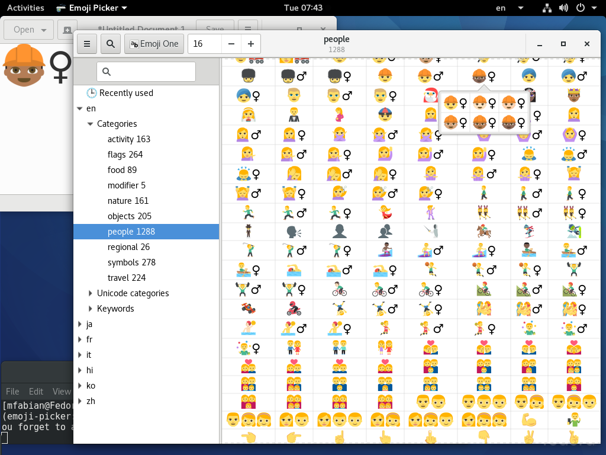 2. Another font which has emoji in colour is the “Emoji One” font (“emojione-android.ttf”). It is available here. If you want a Fedora package you can also get this font from here.
To make the colour emoji fonts your default emoji fonts, you can use a fontconfig setup file `~/.config/fontconfig/fonts.conf` as in this [example fonts.conf](#) file and edit it a bit.
This [example fonts.conf](/other-files/fonts.conf) file gives “Noto Color Emoji” the highest priority. emoji font. If you prefer the “Emoji One” font, edit that file and put “Emoji One” at the topmost priority. Store the file as `~/.config/fontconfig/fonts.conf`.
Without the hacks to show emoji in colour, the emoji support in ibus-typing-booster will still work but the emoji will be displayed in grayscale (when using “Noto Color Emoji” or “Emoji One”) or black and white (when using other fonts).
6
Using NLTK to find related words
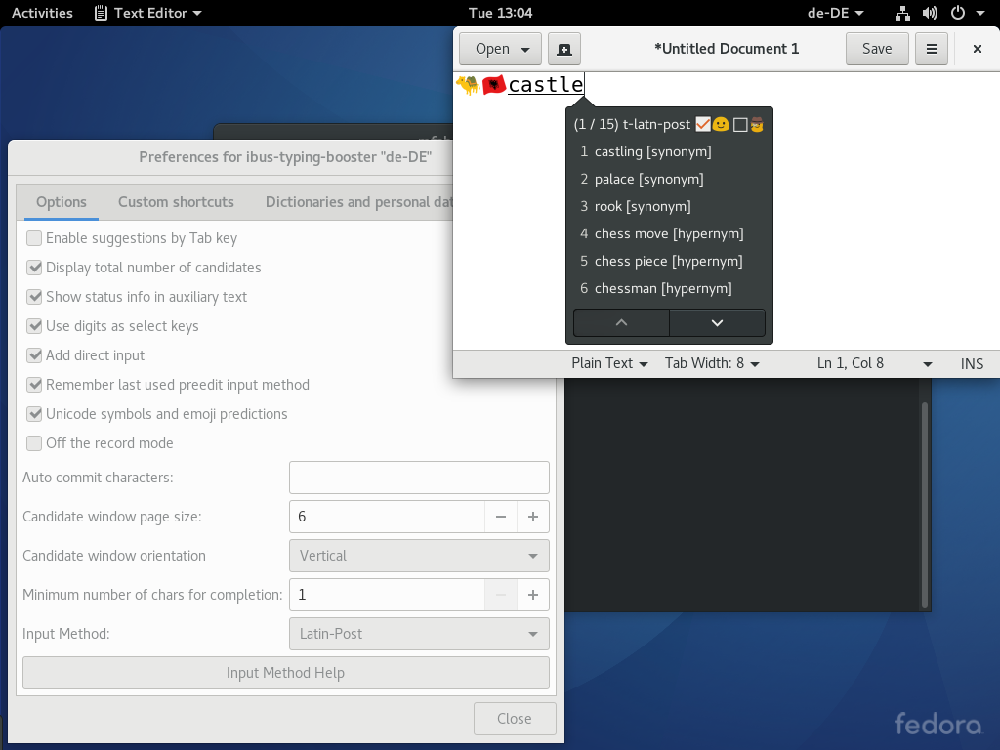
ibus-typing-booster can also find words which are related to any of the candidates displayed. To show related words for a candidate, move up or down in the candidate list using the arrow-up/arrow-down keys or the page-up/page-down keys until the desired emoji is highlighted, then press AltGr+F12 (When AltGr+F12 is pressed before moving in the candidate list, i.e. when no candidate at all is highlighted in the candidate list, the word from the preëdit is used to lookup related words). In the screen shot shown, “castle” was typed followed by AltGr+F12 and synonyms for “castle” are displayed. hypernyms or hyponyms may also be displayed.
Looking up related words like this currently only works for English. When trying to find related words for non-English words, nothing will happen.
The lookup of related words uses NLTK and will only work when NLTK for Python3 and the wordnet corpus for NLTK are installed. On Fedora, you can install it like this:
sudo dnf install python3-nltk
python3
import nltk
nltk.download()
A download tool for NLTK data as seen in the next screen shot opens, select the wordnet corpus and click the “Download” button:
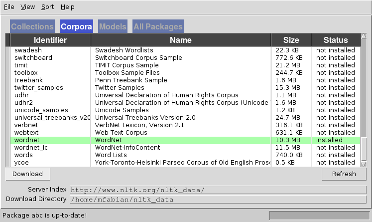
7
Speech recognition
ibus-typing-booster supports speech recognition using the Google Cloud Speech-to-Text service which supports 120 languages.
This service is currently only free for up to 60 minutes per month, when using it for more than 60 minutes per month one has to pay a fee. The pricing is explained here.
To be able to use the Google Cloud Speech-to-Text service, one has to setup a GCP Console project.
The above link explains that one has to do the following things:
- Create or select a project.
- Enable the Google Speech-to-Text API for that project.
- Create a service account.
- Download a private key as a .json file.
The link explaining how to setup a GCP Console project also mentions that one has to install and initialize the Google Cloud SDK. Actually doing that seems to be optional, I tried doing the ibus-typing-booster speech recognition without installing the Google Cloud SDK and it seems to work just fine without.
And one has to install the client library for Python3 . This link explains that you can install the client library with the command
pip install --upgrade google-cloud-speech
Attention:
on most Linux distributions today, the above line will install the Python2 version of this client library. But ibus-typing-booster requires Python3, so you probably have to use
pip3 install --upgrade google-cloud-speech
to get the Python3 version of the client library (unless on your distribution pip already defaults to Python3 but that is rather unlikely at the moment). You can also add the --user option if you want to install this in the home directory of the user:
pip3 install --user --upgrade google-cloud-speech
And you need to install the Python3 module of pyaudio. How to do that depends on you Linux distribution. On Fedora 29 you can do it with:
sudo dnf install python3-pyaudio
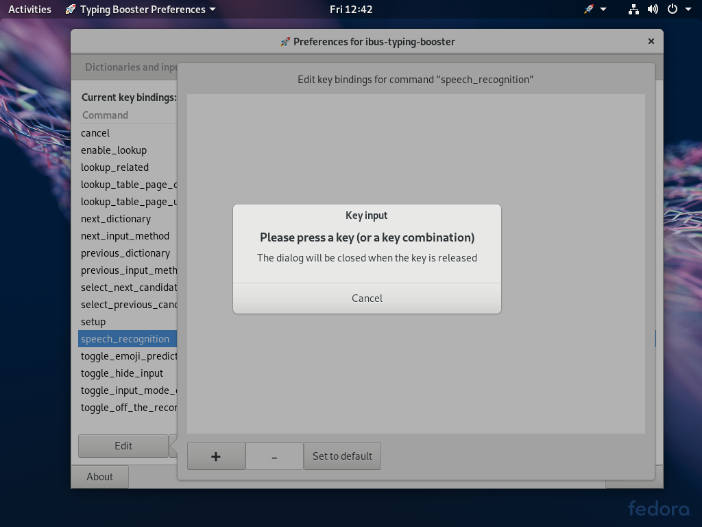
-
Finally, after the Google setup and the software installation is done, you can enable speech recognition in ibus-typing-booster.
One necessary thing to set up is setting a key binding for speech recognition. By default that key binding is empty, the screen shot shows how to set it to something.
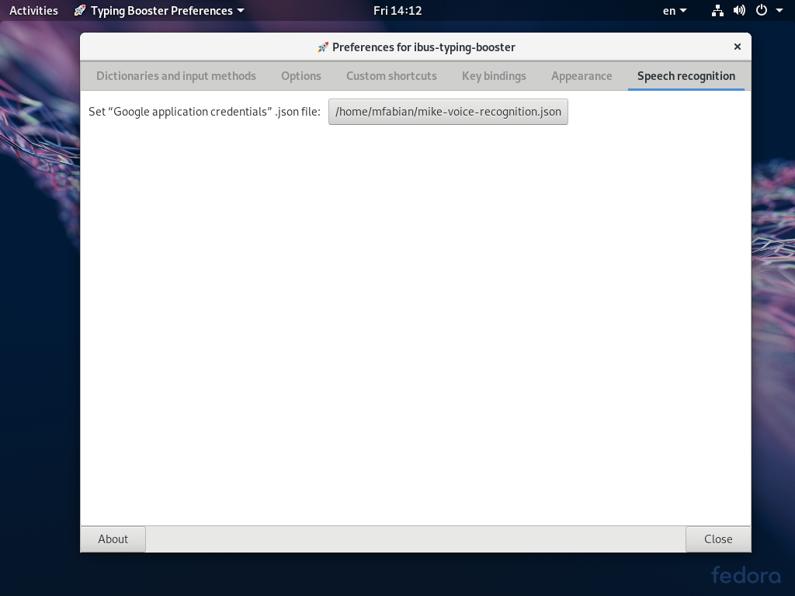
-
Another necessary thing to setup is to specify the location of the “Google application credentials” .json file which you should have downloaded above when setting up a GCP Console project.
The screen shot shows that you can do that in the “Speech recognition” tab of the setup tool of ibus-typing-booster.
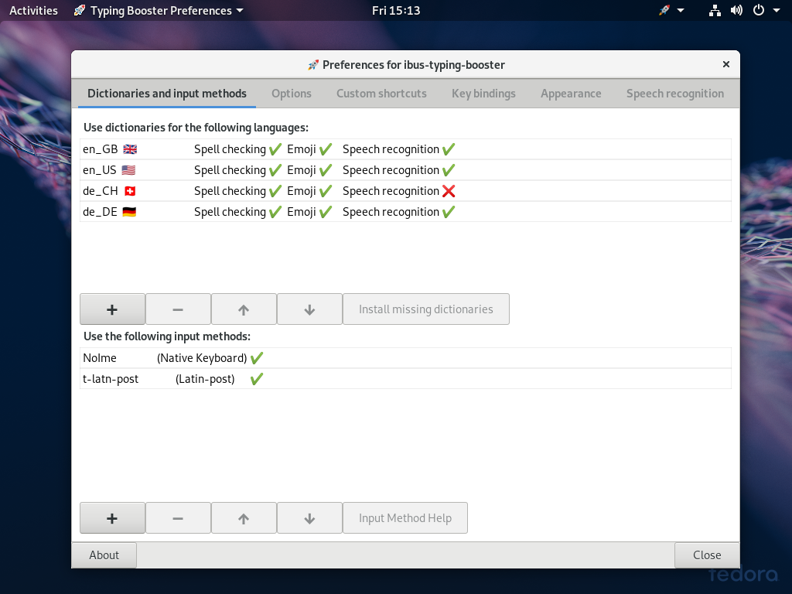
-
The language used for speech recognition is the language of the dictionary with the highest priority in ibus-typing-booster.
You can see these dictionary priorities by opening the setup tool of ibus-typing-booster and looking at the “Dictionaries and input methods” tab. The dictionary at the top of the list has the highest priority and the language of this dictionary is used for Google Speech-to-Text.
Here you can also see for which languages speech recognition is officially supported. The official list of languages supported by Google Cloud Speech-to-Text is here. In the ibus-typing-booster setup tool “Dictionaries and input methods” tab, a row for a language officially supported by Google Speech-to-Text is marked with “Speech recognition ✔️”, a row for a language not officially supported by Google Speech-to-Text is marked with “Speech recognition ❌”.
In Googles official list, only “de_DE” is supported among the German variants. Therefore, one can see in the screen shot that “de_CH” is marked with “Speech recognition ❌”.
But, when I tried it, I found that “de”, “de-DE”, “de-AT”, “de-CH”, “de-BE”, “de-LU” all seem to work the same and seem to recognize standard German. When using “de-CH”, it uses “ß” when spelling German words even though “ss” is used in Switzerland instead of “ß”. There seems to be no difference between using Google Speech-to-Text for all these variants of German.
However, for “en-GB” and “en-US”, there is a difference, the produced text uses British or American spelling depending on which one of these English variants is used.
I don’t want to disallow using something like “de-CH” for speech recognition just because it is not on the list of officially supported languages. Therefore, I allow all languages to be used for speech recognition. But when a language is not officially supported, I mark it with “Speech recognition ❌” and you can try whether it works well or not.
When trying to use a language which is really not supported by Google Speech-to-Text, for example “gsw_CH” (Alemannic German in Switzerland), it seems to fall back to American English, i.e. it behaves as if speech recognition for “en_US” were used.
To switch to a different language for speech recognition you don’t always have to open the setup tool, you can also use key bindings to change the highest priority dictionary, see the commands “next_dictionary” and “previous_dictionary” in the key bindings tab of the setup tool.
And you can also change the highest priority dictionary by using the Gnome panel (or the panel of your favourite desktop) or the ibus floating panel on non-Gnome desktops.
To input using speech recognition, press the key which is bound to the command “speech_recognition”. A popup appears near the writing position showing something like “🎙en_GB 🇬🇧: ”. Now speak something and what Google Speech-to-Text recognizes appears in that popup which then may look like “🎙en_GB 🇬🇧: This is the text I have spoken”. When a pause is detected in the voice recording, the speech recognition is finalized and the result is inserted at the writing position.